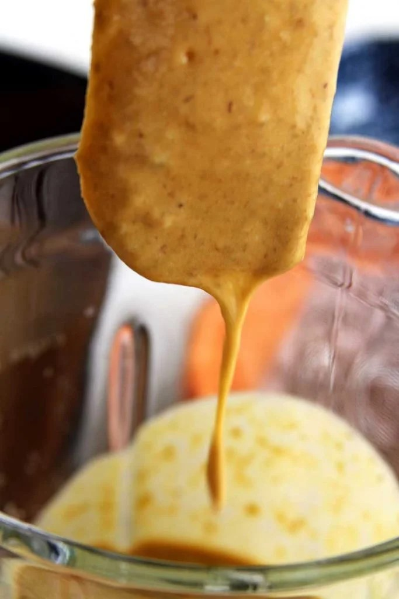
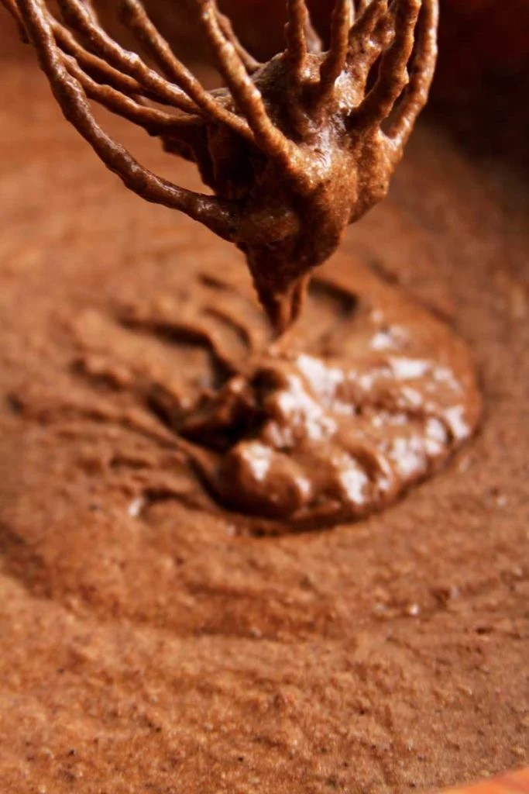
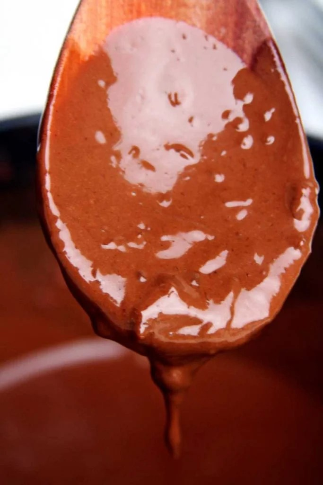
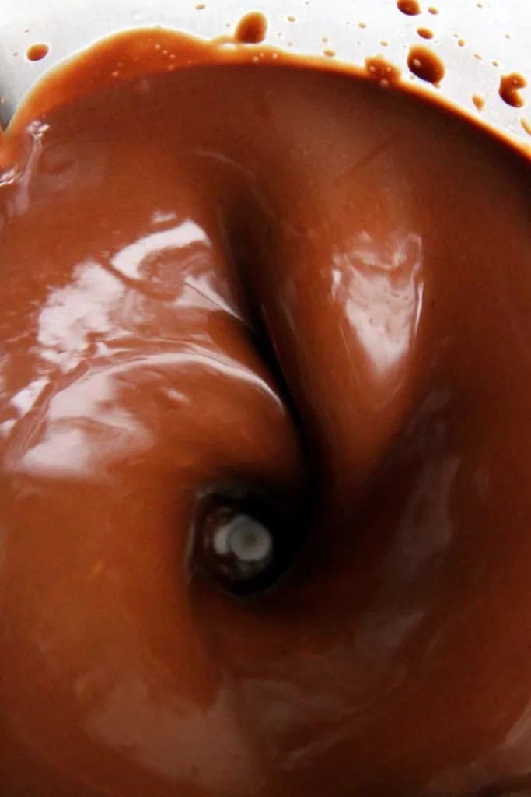

INGREDIENTES SECOS
1/4 xícara de cacau em pó 100% (24 g)
1/2 xícara de araruta (60 g)
1/4 xícara de amaranto em flocos (30 g)
1/2 colher de sopa de fermento em pó (7,5 g)
1/2 colher de chá de bicarbonato de sódio (opcional)
INGREDIENTES MOLHADOS
4 ovos
1 xícara de lentilha cozida “al dente” (140 g)
1/3 xícara de óleo de coco (80 ml)
1/3 xícara de açúcar de coco (40 g)
2 bananas branca/prata (200 g)
Pitada de sal
1 colher de chá de baunilha (opcional)
1 colher de sopa de vinagre de maçã (opcional)
INGREDIENTES COBERTURA DE CHOCOLATE
3 colheres de sopa de araruta (23 g)
3 colheres de sopa de açúcar de coco (23 g)
2 colheres de sopa de cacau em pó 100% (12 g)
200 ml de leite de coco
25 gramas de raspas chocolate 85% (opcional)
Este bolo é sucesso com as crianças, fica macio, com sabor intenso de chocolate e a cobertura cremosa deixa tudo mais atraente e saboroso.
Unte uma forma média (20 x 30 cm) com um pouco de óleo e cacau em pó 50% (prefiro o cacau com açúcar), se preferir use o cacau em pó 100%, mas saiba que ele deixa o bolo um pouquinho mais amargo.
Como este é um bolo rápido preaqueça o forno a 180º C para que na hora que seu bolo estiver pronto para assar o forno esteja na temperatura correta.
Em uma bacia grande misture todos os ingredientes secos com um fuet ou colher de pau e reserve.
Bata todos os ingredientes molhados no liquidificador até obter uma massa lisa e líquida.

Agora é só adicionar a massa de lentilha sobre os ingredientes secos e mexer bem até obter uma massa grossinha e homogênea.

Despeje a massa na forma previamente untada e leve para assar em forno preaquecido a 180º C por aproximadamente 20-25 minutos ou até que você espete o palito e ele saia limpo.
MODO DE PREPARO COBERTURA
Em uma panela pequena misture a araruta, o açúcar de coco e o cacau em pó.
e vá sempre mexendo para dissolver os secos dentro do leite de coco.
Depois que você já tiver incorporado os secos com o leite de coco ligue o fogo e mantenha bem baixo, mexendo sempre para evitar que a cobertura fique empelotada.
Você deve mexer por alguns minutos até que a cobertura engrosse. Como eu estava fazendo a cobertura em uma panela de cerâmica que atinge uma temperatura mais alta, minha cobertura empelotou, mas não se preocupe se acontecer isso com a sua também, é muito simples de resolver.
Se sua cobertura empelotar como a minha e nela ficarem grumos é só bater no liquidificador que ela fica lisa e brilhante.


Se você ficar com preguiça de bater a cobertura no liquidificador e não se importar com os grumos você pode utilizá-la mesmo sem bater.
Lembre-se de fazer a cobertura somente depois que o bolo de chocolate de liquidificador estiver pronto e só coloque as raspas de chocolate quando a cobertura estiver fria para que não derreta.
Minha sugestão é furar bem o bolo de chocolate de liquidificador com um garfo e depois despejar a cobertura por cima, assim a cobertura entra nos furinhos e deixa o bolo ainda mais molhadinho.
Você até pode substituir o cacau 100% pelo chocolate em pó 50%, mas o bolo vai ficar mais doce e menos escuro.
Substitua a araruta por polvilho doce ou amido de milho.
Substitua 1/4 de xícara de amaranto em flocos por 1/3 de xícara quinoa em flocos ou aveia em flocos.
Eu sempre uso o bicarbonato de sódio em receitas com chocolate, ele deixa o bolo mais escuro, ajuda no crescimento e se você não usar você deve usar 1 colher de sopa de fermento em pó no bolo.
Os ovos não são substituíveis nesta receita.
Sempre que usar grãos integrais cozidos nas receitas eles devem ser cozidos “al dente“, nem muito mole, nem muito duro. Quando cozidos em excesso adicionam água para a receita e podem estragar a estrutura da massa.
O óleo de coco deixa esta receita mais saudável, mas ele endurece um pouco a massa quando você coloca na geladeira. Você pode substituir o óleo de coco por qualquer óleo neutro, eu gosto bastante de usar óleo de girassol.
Você pode substituir o açúcar de coco por açúcar mascavo ou demerara.
O vinagre de maçã é opcional, mas ajuda o bolo a crescer e ficar mais macio quando combinado com o bicarbonato de sódio.
Você pode usar qualquer banana, use aproximadamente 1/2 xícara de banana amassada.
Você pode usar qualquer leite vegetal para o preparo da cobertura.
Você pode decorar com granulado para deixar este bolo de chocolate de liquidificador mais atraente para as crianças.
Este bolo dura 2 ou 3 dias fora da geladeira, mas minha sugestão é mantê-lo na geladeira desde o primeiro dia, assim ele dura 6 ou 7 dias refrigerado. Ah, e não se preocupe, a textura dele gelado quase não muda, eu até prefiro ele no segundo dia quando a cobertura penetrou mais no bolo e tudo está mais molhadinho.
Quando você usa óleo de coco o bolo fica um pouquinho mais firme na geladeira, pois o óleo de coco solidifica na temperatura da geladeira. Para um bolo mais fofinho dentro da geladeira use óleo de girassol ou qualquer óleo neutro da sua preferência.
O açúcar de coco tem menor índice glicêmico, mas acaba deixando o bolo um pouco mais seco. Para um bolo mais molhadinho use açúcar mascavo.
Você pode congelar este bolo sem a cobertura, para isso corte fatias, armazene em um pote ou saco plástico adequado e leve para o freezer. Tente não sobrepor as fatias para que não grudem umas nas outras. Para descongelar coloque por aproximadamente 30 segundos no micro-ondas sobre um papel toalha, 15 segundos de cada lado. Se não usar micro-ondas é só colocar na geladeira de um dia para o outro. Dura aproximadamente 3 meses congelado.
Se você tem filhos pequenos ou adolescentes que implicam com sabores mais amargos troque 1/4 xícara de cacau 100% por 1/3 xícara de cacau 50%. Eu sinceramente não acho que esse bolo fique amargo nem um pouco e o cacau 100% é mais benéfico para sua saúde. O cacau 50% possuí 50% de açúcar de açúcar refinado, então se usar o cacau 50% o bolo vai ficar mais doce. Se você usar o cacau 50% eu sugiro aumentar a quantidade pra que o bolo não fique pálido.